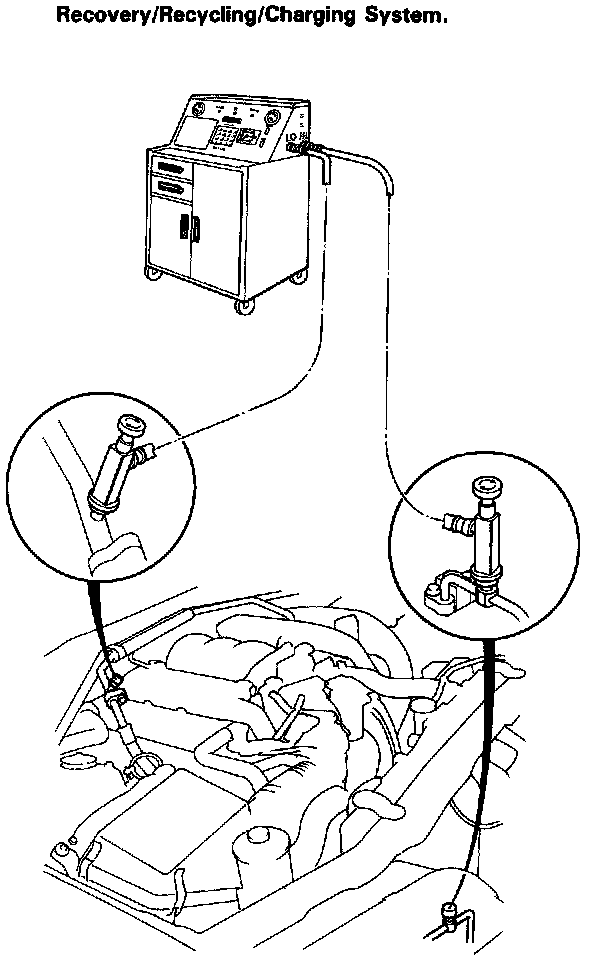

Charging the System

Only use service equipment that is U.L.-Listed and is certified to meet the requirements of SAE J221O to remove HFC-134a (R-134a) from the air conditioner system.
CAUTION: Exposure to air conditioner refrigerant and lubricant vapor or mist can irritate eyes, nose and throat.
Avoid breathing the air conditioner refrigerant and lubricant vapor or mist.
If accidental system discharge occurs, ventilate work area before resuming service. Additional health and safety information may be obtained from the refrigerant and lubricant manufacturers.
Refrigerant capacity: 750 g (26.5 oz)
CAUTION: Do not overcharge the system; the compressor will be damaged.
Connect an R-134a refrigerant Recovery/Recycling/Charging System to the car as shown following the equipment manufacturer's instructions.